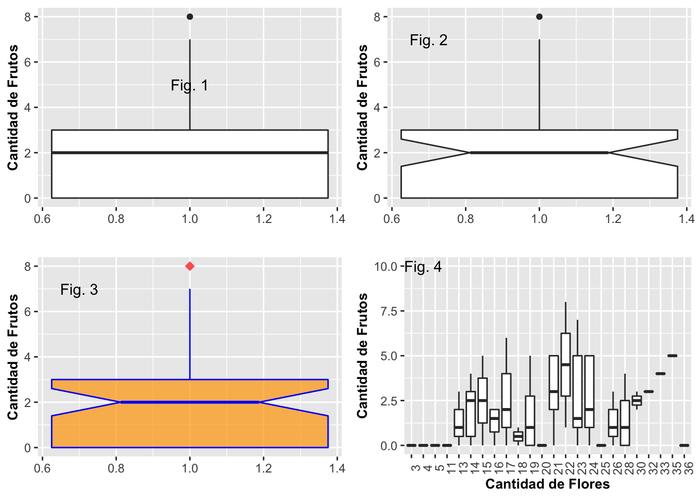
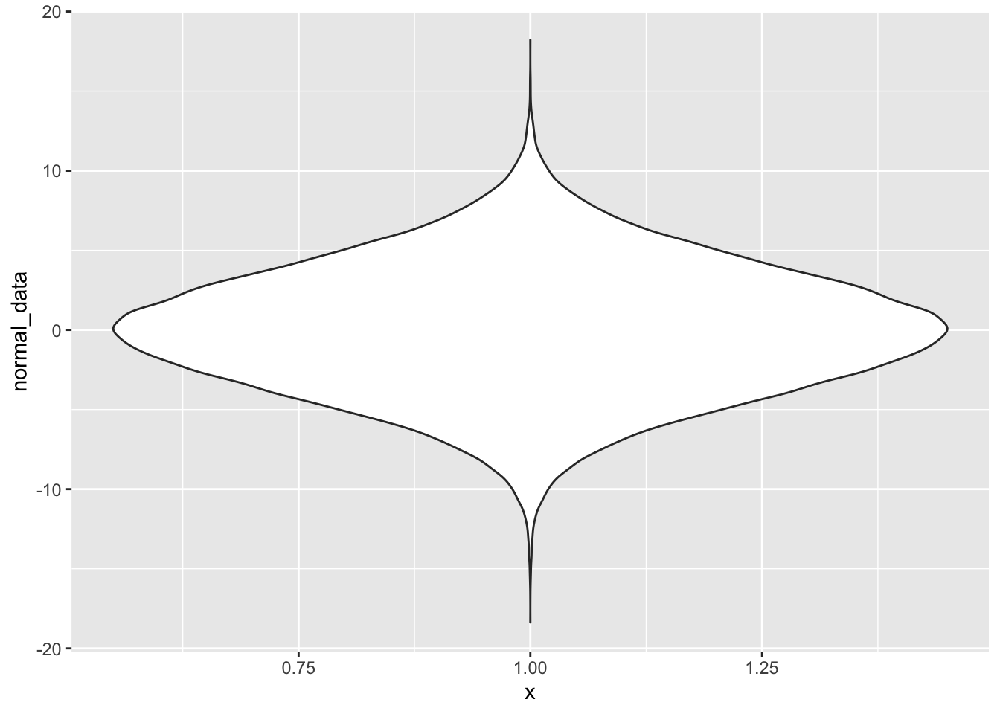
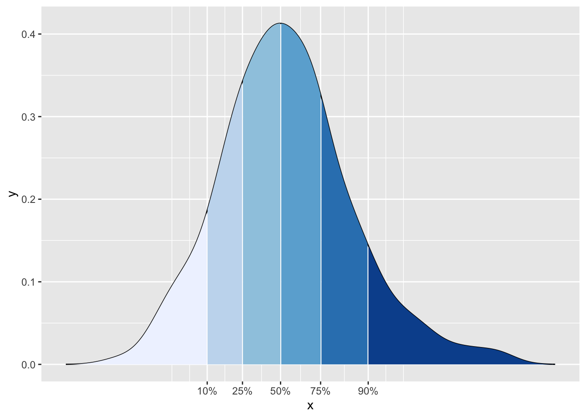
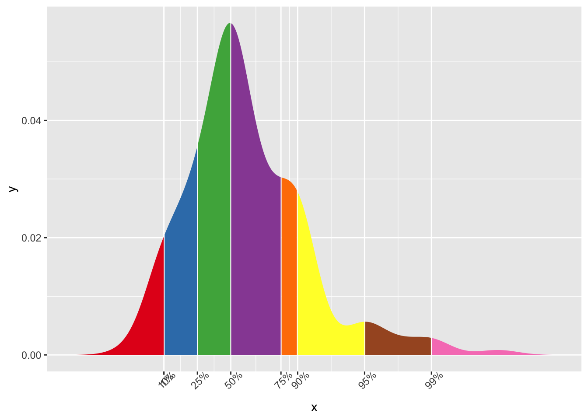

Gráficos de caja y de violín
Fecha de la ultima revisión
## [1] "2024-01-31"

Diagrama de caja con geom_boxplot
Para datos que no tienen una distribución normal, típicamente se usa un diagrama de caja para visualizar la distribución de los datos. El diagrama de caja distribuye los datos basándose en el rango del orden de tamaño o valor numérico. Primeramente, los datos son ordenados de menor a mayor. Los valores en el gráfico correspondiente representan los cuartiles 25, 50 y 75. Los bigotes (las líneas que se extienden de las cajas) representan 1.5 veces multiplicado por el rango intercuartil (RIC), o la distancia entre el primer cuartil (25) y el tercer cuartil (75). Los datos que están fuera de ese rango se representan con puntos. Los gráficos que usan muescas, o notch, las calculan de acuerdo a la siguiente fórmula: (1.58 x RIC) / (raíz cuadrada de la muestra). Utilizaremos nuevamente los datos de la orquídea Dipodium en los siguientes ejemplos, particularmente representando la cantidad de flores y el número de frutos.
En el primer gráfico a continuación, Fig. 1 (arriba a la izquierda), se muestra un diagrama de caja básico. Note que la variable en la primera x tiene valor de 1, lo que significa que hay un solo grupo. En el segundo gráfico, Fig. 2 (arriba a la derecha), se modifica con la opción de notch. En el tercer gráfico, Figura Fig. 3 (abajo a la izquierda), se cambió el color de la caja, la forma o shape de los valores atípicos o outliers, y su tamaño. En los tres primeros gráficos, se usan todos los datos en un mismo diagrama de caja. En el cuarto gráfico, Fig. 4 (abajo a la derecha), observamos la distribución de la cantidad de flores por el número de frutos observado por planta. Note que para este último caso en particular, hay más de un grupo.
Las muescas (notch)
Las muescas a los lados de un diagrama de caja se pueden interpretar como un intervalo de comparación alrededor de los valores de la mediana. La altura de la muesca es la mediana \(+/- 1,57 x IQR/sqrt(n)\) donde IQR es el rango intercuartílico definido por los percentiles 25 y 75 y n es el número de puntos de datos
Teoretical boxplot
## # A tibble: 49 × 1
## value
## <dbl>
## 1 1
## 2 8
## 3 9
## 4 10
## 5 100
## 6 101
## 7 102
## 8 103
## 9 104
## 10 105
## # ℹ 39 more rows
#names(dipodium)
library(conflicted)
library(janitor)
library(gt)
dipodium=clean_names(dipodium)
gt(head(dipodium))| tree_number | tree_species | dbh | plant_number | ramet_number | distance | orientation | number_of_flowers | height_inflo | herbivory | row_position_nf | number_flowers_position | number_of_fruits | perc_fr_set | pardalinum_or_roseum | fruit_position_effect | frutos_si_o_no | p_or_r_infl_lenght | num_of_fruits | species_name | cardinal_orientation |
|---|---|---|---|---|---|---|---|---|---|---|---|---|---|---|---|---|---|---|---|---|
| 1 | E.o | 75 | 1 | 1 | 2.47 | 40 | 11 | 35 | n | 1 | 24 | 0 | 0.00 | r | 1 | 0 | r | 0 | r | 1 |
| 1 | E.o | 76 | 2 | 1 | 1.97 | 50 | 19 | 47 | n | 2 | 23 | 0 | 0.00 | r | 2 | 0 | r | 0 | r | 2 |
| 2 | E.o | 76 | 3 | 1 | 1.95 | 350 | 18 | 63 | n | 3 | 25 | 1 | 0.04 | r | 3 | 0 | r | 1 | r | 8 |
| 3 | E.o | 58 | 4 | 1 | 3.24 | 210 | 24 | 47 | n | 4 | 20 | 5 | 0.25 | r | 4 | 0 | r | 5 | r | 5 |
| 4 | E.o | NA | 5 | 1 | 0.85 | 80 | 25 | 61 | n | 5 | 13 | 0 | 0.00 | r | 5 | 0 | r | 0 | r | 2 |
| 5 | E.o | 59 | 6 | 1 | 2.62 | 160 | 17 | 35 | n | 6 | 25 | 2 | 0.08 | p | 6 | 0 | r | 2 | p | 4 |
boxplot1 <- ggplot(d1, aes(number_of_fruits, x=1))+
geom_boxplot()+
annotate("text", x= 1,y= 5, label="Fig. 1")+
labs(x="", y="Cantidad de Frutos")+
theme(axis.title=element_text(size=10,face="bold"))boxplot2 <- ggplot(d1, aes(number_of_fruits, x=1))+
geom_boxplot(notch=TRUE) +
annotate("text", x= 0.7,y= 7, label="Fig. 2")+
labs(x="", y="Cantidad de Frutos")+
theme(axis.title=element_text(size=10,face="bold"))boxplot3 <- ggplot(d1, aes(number_of_fruits, x=1))+
geom_boxplot(notch=TRUE,colour="blue",
fill="orange", alpha=0.7, outlier.shape=18,
outlier.color="red", outlier.size=3)+
annotate("text", x= 0.7,y= 7, label="Fig. 3")+
labs(x="", y="Cantidad de Frutos")+
theme(axis.title=element_text(size=10,face="bold"))boxplot4 <- ggplot(d1, aes(factor(number_of_flowers), number_of_fruits))+
geom_boxplot(notch=FALSE)+
annotate("text", x= 2,y= 10, label="Fig. 4")+
labs(y="Cantidad de Frutos", x="Cantidad de Flores")+
theme(axis.title=element_text(size=10,face="bold"))+
theme(axis.text.x = element_text(angle = 90))
Cambiar el ancho de las cajas
Cambiar el ancho de las cajas con varwidth. Esto produce un diagrama de caja estándar y por defecto es FALSE; si es TRUE, produce un diagrama donde el ancho en el eje de X es proporcional a la raíz cuadrada del número de observaciones en los grupos.
dipodium %>%
dplyr::select(number_of_flowers, number_of_fruits) %>%
drop_na() %>%
ggplot(aes(factor(number_of_flowers), number_of_fruits,
fill=factor(number_of_flowers)))+
geom_boxplot(varwidth=TRUE)+
theme(legend.position = "none")+
xlab("Cantidad de Flores")+
ylab("Cantidad de Frutos")# la función varwidth =TRUE cambia
#el ancho de la barras basado en una formula indicado abajo.
# Más datos más ancho la barra. - Preparar un gráfico de caja (box plot) o tambien llamado Box
and whiskers. Utiliza los datos
ElphickBirdData en el paquete ggversa.
Utiliza la columna AQBIRDS, que son la cantidad de
pájaros acuaticos muestreados por Zuur, Ieno and Elphick. La especies de
pájaro de nombre Becasa de Mar =
Godwit es una ave migratoria que come pequeños moluscos
en la playas. Utiliza la columna “SITE” para crear un box plot con los
“notch”, por cada sitio de muestreo.
- Salvar el gráfico en formato .png y subirla a MSTeam.
La foto es de Leo Berzins via Flickr
Opciones y Parametros de geom_boxplot:
ggplot(el archivo de datos, aes(la variable continua, x=1)): {x=1} si es un grupo o el nombre de la variable discreta si hay múltiples grupos
geom_boxplot(stat, position, outlier.color, outlier.shape, outlier.size, notch, notchwidth, varwidth)
- stat: transformación estadística de los datos; solamente se necesita si se quiere anular el método por defecto que usa geom_boxplot
- position: para ajustar el solapamiento de los datos
- outlier.color: define el color de los valores atípicos
- outlier.shape: define la forma de los valores atípicos
- outlier.size: define el tamaño de los valores atípicos
- notch: para producir las muescas; se define con los valores TRUE o FALSE
- notchwidth: define el ancho de las muescas relativo a la caja (por defecto es 0.5)
- varwidth: produce un diagrama de caja estándar y por defecto es FALSE; si es TRUE, produce un diagrama donde el ancho en el eje de X es proporcional a la raíz cuadrada del número de observaciones en los grupos.
Diagrama de violín con geom_violin
El gráfico de violín es similar al gráfico de caja, pero la caja es curvada para dar una apreciación de la densidad de los datos. Si la distribución de los datos sigue una curva normal, saldrá entonces como una curva de campana orientada verticalmente. Para los ejemplos a continuación, utilizaremos los datos de la orquídea terestre australiana Caladenia valida.
El modelo básico del gráfico de violín se muestra en la Figura, Note que, tal como ocurre con geom_boxplot, si se tiene solamente un grupo, se tiene que incluir x=1. Lo que uno observa es que la mayoria de la información encuentre cerca del valor 5 y 10
library(ggplot2)
CalVal=caladeniavalida
violinplot1 <- ggplot(CalVal, aes(DCL, x=1))
violinplot1 +
geom_violin()+
annotate("text", x= 0.75,y= 19, size=8,
label="", na.rm=TRUE)+
theme(axis.title=element_text(size=10,face="bold"))+
ylab("EL largo del apendizaje dorsal")
Geom_violin con múltiples grupos
A continuación vamos a producir el gráfico de violín por diferentes factores o grupos de acuerdo al año, a la vez que se le añade color azul a los violines y se le cambia la intensidad al color con alpha=().
violinplot2 <- ggplot(CalVal, aes(y=LCL, x=factor(Year)))
violinplot2 +
geom_violin(fill="blue", alpha=0.5)+
annotate("text", x=2,y= 19, size=8,
label="", na.rm=TRUE)+
labs(x="Año", y="LCL")+
theme(axis.title=element_text(size=10,face="bold"))+
ylab("EL largo del apendizaje lateral")
El gráfico de violín con datos distribución normal
## normal_data
## 1 0.1935699
## 2 5.0240626
## 3 -4.4411186
## 4 -4.0317404
## 5 -5.5985502
## 6 -1.6595799library(ggplot2)
ggplot(dfnorm,aes(normal_data, x=1))+
geom_violin()+
geom_boxplot()+
geom_jitter(position = position_jitter(width = .1))
Geom_violin utilizado con geom_point y geom_jitter
Al gráfico anterior se le pueden añadir los datos para visualizar mejor la distribución. Los datos de altura de la planta OH fueron recolectado de forma discreta en unidades de 5 cm, por lo que todos los valores similares aparecerán solapados unos sobre otros. Debido a esta situación particular de ese tipo de datos, añadirle puntos para visualizarlos con la función geom_point realmente no ayuda mucho a entender su distribución. Esto es debido a que no se puede apreciar la cantidad de datos utilizados para construir los violines. Por otro lado, uno puedo utilizar geom_jitter y tener una mejor apreciación de su distribución.
Es importante tomar en consideración que si se le añade geom_point antes de geom_violin, los puntos podrían quedar escondidos detrás del violín.
violingp=violinplot3a <- ggplot(CalVal, aes(y=OH, x=factor(Year)))+
geom_violin()+
geom_point()+ # Note que los puntos serán sobrepuestos sobre el violín
annotate("text", x=2,y= 20, size=8,
label="", na.rm=TRUE)+
labs(x="Año", y="OH")+
theme(axis.title=element_text(size=10,face="bold"))
violingv=violinplot3a +
geom_violin()+
geom_jitter(position = position_jitter(width = .1))+ # Note que los puntos serán sobrepuestos sobre el violín pero no solapan uno encima del otro.
annotate("text", x=2,y= 20, size=8,
label="", na.rm=TRUE)+
labs(x="Año", y="OH")+
theme(axis.title=element_text(size=10,face="bold"))+
xlab("Overall height, mm")
grid.arrange(violingp, violingv, ncol=2)
geom_jitter y solapamiento de geom
En el próximo gráfico, se invocó geom_jitter antes que geom_violin, pero a la misma vez se le cambió la intensidad del color para que se vean mejor los puntos. Vemos que algunos de los puntos que antes están medio escondidos y los que no solapan el violin se revelan sobre mejor.
violinplot3 <- ggplot(CalVal, aes(y=OH, x=factor(Year)))
violinplot3 +
geom_jitter(position = position_jitter(width = .2), colour="red")+
geom_violin(fill="yellow", colour="blue", alpha=0.3)+
annotate("text", x=2,y= 20, size=8,
label="")+
labs(x="Año", y="OH")+
theme(axis.title=element_text(size=10,face="bold"))
Los cuartiles y geom_violin
Ahora se muestran el cuartil 25, la mediana (50) y el cuartil 75 en el mismo gráfico de violín con líneas horizontales.
violinplot3 <- ggplot(CalVal, aes(y=OH, x=factor(Year)))
violinplot3 +
geom_violin(draw_quantiles = c(0.025, 0.25,0.5, 0.75,0.975))+
annotate("text", x=2,y= 20, size=8,
label="")+
labs(x="Año", y="OH")+
theme(axis.title=element_text(size=10,face="bold"))
Añadiendo color al contorno del violin
En esta figura se le añade color al contorno de los violines y las líneas de los cuartiles.
## [1] "Population" "Year" "Plant_num" "OH" "OD"
## [6] "OW" "DSL" "DCL" "LSL" "LCL"
## [11] "LSW" "PL" "LL" "LW" "Fruit_not"violinplot3 <- ggplot(CalVal, aes(y=OH, x=Population))
violinplot3 +
geom_violin(colour="red", alpha=.2, draw_quantiles = c(0.25, 0.5, 0.75))+
annotate("text", x=2,y= 20, size=8,
label="")+
labs(x="Año", y="OH")+
theme(axis.title=element_text(size=10,face="bold"))
Geom_violin por categoría o factor
En la Figura se cambia el color de cada grupo, Year. Para lograr ese efecto se le añade otra variable para representar los grupos (o categorías) por color; en este caso, la distribución de los tamaños de las plantas en términos de si produjeron frutos o no.
violinplot3 <- ggplot(na.omit(CalVal), aes(y=OH, x=factor(Year)))
violinplot3 +
geom_violin(aes(fill=(factor(Fruit_not))),
draw_quantiles = c(0.25, 0.5, 0.75))+
annotate("text", x=2,y= 20, size=8,
label="")+
labs(x="Año", y="OH")+
theme(axis.title=element_text(size=10,face="bold"))+
ylab("Altura de la planta")
Geom_violin en proporción al tamaño de la muestra
En la Figura se modifica el mismo gráfico para que tome en consideración el tamaño de muestra utilizando la opción de scale con el parámetro count. En otras palabras, los violines van a quedar modificados para incluir el tamaño de la muestra; o sea, la escala máxima del ancho es proporcional al tamaño de la muestra. Entonces, en este caso vemos el año donde hubo mayor (2007) y menor (2008) tamaño de muestra de acuerdo al ancho que se muestra para cada violín.
violinplot3 <- ggplot(CalVal, aes(y=OH, x=factor(Year)))
violinplot3 +
geom_violin(scale = "count",
draw_quantiles = c(0.25, 0.5, 0.75))+
labs(x="Año", y="OH")+
theme(axis.title=element_text(size=10,face="bold"))
Geom_violin no en proporción al tamaño de la muestra
En la Figura se modifica el ancho del violín a 1 en la escala del eje de X. En otras palabras, en este caso el ancho width del violín para el primer año va de 2003.5 al 2004.5, para el segundo violín de 2004.5 a 2005.5 y así sucesivamente en forma consecutiva para los demás años. Este enfoque crea una grado de uniformidad para cada ancho. En este caso el ancho no esta relacionado con el tamaño de muestra como el ejemplo anterior.
violinplot3 <- ggplot(CalVal, aes(y=OH, x=factor(Year)))
violinplot3 +
geom_violin(scale = "width",
draw_quantiles = c(0.25, 0.5, 0.75))+
labs(x="Año", y="OH")+
theme(axis.title=element_text(size=10,face="bold"))
Geom_violin y el cambio de orientación
En la Figura cambiamos la orientación de los gráficos anteriores utilizando la opción coord_flip().
violinplot3 <- ggplot(CalVal, aes(y=OH, x=factor(Year)))
violinplot3 +
geom_violin()+
coord_flip()+
labs(x="Año")+
theme(axis.title=element_text(size=10,face="bold"))+
ylab("Altura de la planta")
Gráficos de Densidad con colores para los diferentes cuantiles
library(data.table)
dt <- data.table(x=c(1:200),y=rnorm(200)) # Crear un distribucion de 200 datos al azar con una distribución normal
dens <- density(dt$y) # calcular la densidad
df <- data.frame(x=dens$x, y=dens$y) # crear un data frame de la densidad
probs <- c(0.1, 0.25, 0.5, 0.75, 0.9) # determinar cual cuantil quiere evaluar
quantiles <- quantile(dt$y, prob=probs) # asignar cada valor a uno de los cuantiles
df$quant <- factor(findInterval(df$x,quantiles)) # Asignar los cuantiles a factores
ggplot(df, aes(x,y)) + geom_line() + geom_ribbon(aes(ymin=0, ymax=y, fill=quant)) + scale_x_continuous(breaks=quantiles) + scale_fill_brewer(guide="none")
CalVal2=
CalVal %>% select(OH) %>%
drop_na() # Seleccionar lo datos deseados removiendo los "NA"
dens2=density(CalVal2$OH)
dens2##
## Call:
## density.default(x = CalVal2$OH)
##
## Data: CalVal2$OH (163 obs.); Bandwidth 'bw' = 2.94
##
## x y
## Min. :16.18 Min. :0.0000094
## 1st Qu.:34.34 1st Qu.:0.0008163
## Median :52.50 Median :0.0050413
## Mean :52.50 Mean :0.0137526
## 3rd Qu.:70.66 3rd Qu.:0.0262349
## Max. :88.82 Max. :0.0566222## x y
## 1 16.17920 9.649217e-06
## 2 16.32136 1.115009e-05
## 3 16.46352 1.283130e-05
## 4 16.60567 1.481782e-05
## 5 16.74783 1.704836e-05
## 6 16.88998 1.953867e-05probs <- c(0.01, 0.1, 0.25, 0.5, 0.75, 0.9, 0.95, .99)
quantiles <- quantile(CalVal2$OH, prob=probs)
df2 <- data.frame(x=dens2$x, y=dens2$y)
df2$quant <- factor(findInterval(df2$x,quantiles))
head(df2)## x y quant
## 1 16.17920 9.649217e-06 0
## 2 16.32136 1.115009e-05 0
## 3 16.46352 1.283130e-05 0
## 4 16.60567 1.481782e-05 0
## 5 16.74783 1.704836e-05 0
## 6 16.88998 1.953867e-05 0ggplot(df2, aes(x,y)) + geom_ribbon(aes(ymin=0, ymax=y, fill=quant)) + scale_x_continuous(breaks=quantiles) + scale_fill_brewer(palette = "Set1",guide="none")+ # colores horribles
theme(axis.text.x = element_text(angle = 45))
- Preparar un gráfico de violín. Utiliza los datos
CypripediumA en el paquete ggversa.
Utiliza la columna Lip_length_mm, que es el largo de
labelo de la orquidea Cypripedium acaule. La especies de
orquídea vive en el norte de Canada en bosques cerados (Forest) o
pantanos (Wetlands). Utiliza la columna Forest_Wetland
para crear una caja de violín por cada sitio de muestreo. Poner color a
los dos grupos. Evaluando la distribución de los datos sobre el tamaño
del labello, Ud. cree que la distribución de tamaño es igual?
- Salva el gráfico en formato .png y subirla a MSteam
Las fotos son de Dr. Peter Nosko de University of Nipissing, North Bay, Canada
Opciones y Parametros de geom_violin:
ggplot(el archivo de datos, aes(la variable continua, x=1)): {x=1} si es un grupo o el nombre de la variable discreta si hay múltiples grupos
geom_violin(x, y, alpha, colour, fill, linetype, size, weight)
- alpha: la intensidad del color
- color: el color de la línea alrededor del violín
- fill: el color que se usa para rellenar el violín
- linetype: representa el estilo de línea; vea la sección
- size: representa el grosor de la línea
- scale: la escala que se usa para producir el violín tomando en cuenta el tamaño de muestra proporcionalmente; utiliza los parámetros count o width
- weight: para modificar el valor original; entonces no sería, por ejemplo, el conteo/suma de los valores si no un valor ponderado (promedio ponderado).